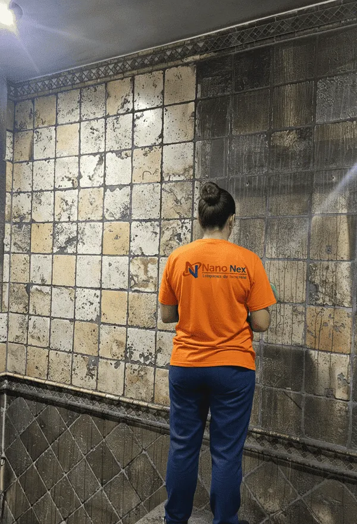

Cómo limpiar el hollín de paredes y techos

Si hay algo que da rabia de verdad tras un incendio es el hollín. Esa capa negra, pegajosa, que lo cubre todo y que, cuando uno la toca, en lugar de irse… se extiende. Y es que el hollín tiene su carácter. Así que antes de coger el estropajo, párese un momento y lea esto, que le va a ahorrar disgustos.
Primera regla de oro: no frote en seco
Le parecerá lo más natural del mundo, pero es el error número uno. El hollín es graso, y al frotarlo en seco lo que hace es empujarlo dentro del poro de la pared y rayar la superficie. De negro pasa a "negro incrustado", que es peor. Y con agua sin más, tres cuartos de lo mismo: forma una pasta que mancha aún más.
Regla que no falla: con el hollín, primero en seco y con cabeza; el agua y los productos, al final.
Pasos para limpiar el hollín correctamente
- Protéjase: Use guantes, mascarilla FFP2 y ropa desechable. El hollín es tóxico.
- Aspire con HEPA: Use aspirador con filtro HEPA a unos centímetros, sin rozar la superficie.
- Esponja química en seco: Es una esponja de caucho vulcanizado que arrastra el hollín sin agua. Se pasa en una dirección.
- Limpieza húmeda específica: Solo después, según el material, aplique desengrasante neutral.
- Desodorización con ozono: Para eliminar completamente el olor residual que persiste.
DIY vs. Profesional: cuándo hacer cada uno
| Escenario | DIY | Profesional | Tiempo |
|---|---|---|---|
| Hollín en pintura (pared pequeña) | Posible | Mejor | 3-5 días (DIY) |
| Hollín en techos | No recomendado | Obligatorio | 1-2 días |
| Hollín en escayola, molduras, tarima | Riesgo alto | Obligatorio | 2-3 días |
| Múltiples habitaciones | No viable | Obligatorio | 3-7 días |
Cuidado, que no todo el monte es orégano: según el material
- Pintura plástica: aguanta bien la limpieza, pero si el hollín la ha "quemado", a veces toca repintar (eso ya no es limpieza).
- Escayola y molduras: son porosas y frágiles. Nada de agua a lo bestia. En el barrio de Salamanca o en Chamberí, con sus techos altos y sus molduras, esto es pan nuestro de cada día.
- Ladrillo visto y piedra: el hollín se mete en el poro. Limpieza técnica sí o sí.
- Madera y tarima: delicadísima. Un trapo húmedo de más y se levanta.
¿Y cuándo llamo a un profesional?
Mire, le voy a ser sincero: para una pared pequeña y de pintura, con su esponja química y paciencia, puede apañárselas. Pero si el hollín cubre techos, materiales delicados o varias estancias, no se complique. Un profesional tiene el equipo, los productos y —sobre todo— sabe qué no hacer en cada superficie. Y como casi siempre lo cubre el seguro, ¿para qué jugársela?
En resumen: nada de frotar a lo loco. En seco, con HEPA y esponja química, y lo delicado, a manos expertas. Su casa se lo agradecerá.
¿Qué necesito para hacerlo yo mismo? (y hasta dónde llegar)
Si el hollín es poco y está sobre una pared pintada normal, puede intentarlo usted. Le digo honestamente lo que necesita y dónde está el límite, para que no se meta en un jardín:
| Herramienta | Para qué sirve |
|---|---|
| Guantes de nitrilo y mascarilla FFP2 | Protegerse del hollín, que es tóxico |
| Aspirador con filtro HEPA | Retirar el hollín suelto sin esparcirlo |
| Esponja química (chemical sponge) | Arrastrar el hollín en seco, sin agua |
| Desengrasante de pH neutro | Limpieza húmeda final, solo si el material lo admite |
La regla del límite: ¿paro o sigo?
Aquí va el consejo que vale el artículo entero. Pare y llame a un profesional en cuanto se dé cualquiera de estas tres cosas: el hollín está en el techo (trabajar boca arriba esparce el residuo y es peligroso), afecta a materiales delicados (madera, escayola, piedra, pladur lacado), o cubre más de una habitación. En esos casos, lo que se ahorra en una llamada lo paga después en repintados y sustituciones. Y casi siempre, recuerde, lo cubre el seguro.
Preguntas frecuentes
¿Puedo limpiar el hollín solo con agua y jabón?
No es buena idea. El hollín es graso; con agua se forma una pasta que mancha más. Hay que empezar en seco con aspiración HEPA y esponja química.
¿Qué es una esponja química?
Una esponja de caucho vulcanizado que arrastra el hollín en seco, sin agua. Es la herramienta clave para no incrustarlo.
¿Se puede quitar el hollín de la escayola y las molduras?
Sí, pero con limpieza técnica no abrasiva. Son materiales porosos y frágiles que se dañan con facilidad.